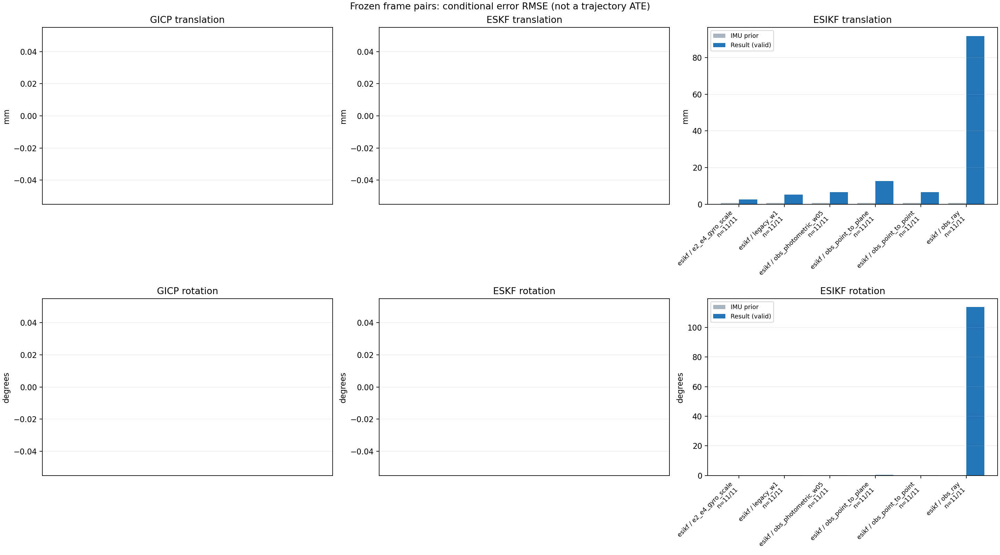

20261015_112553_up · depth=disparity_cache · cache=64af55505ef1b4296ed0
模型视差：/home/ubuntu22/slam/SIO_SLAM/models/tensorrt/disp_896x448_fp16.plan；engine SHA256=604cf6ac1f705c877260711730dd5d2d58c2a21f3020c03c668401ef7fb1e768。输入为生产裁剪与光照处理后的 RGB 0..255；此实验使用原始浮点像素视差，不应用完整前端的邻域视差后处理。
原始 ONNX SHA256：e9f49736a65d68d06681add463866b6defdf78fdd7f4f50f6cc941b682fdc0bc。
代价体图改写验证：ONNX Runtime 固定随机特征输入，最大绝对误差 0；该项检查图改写，完整模型精度仍需由录制数据评估。
配准代码版本：744ac2d993ae629b0cc44a3b1d995e04ab4fad48；观测生成版本：744ac2d993ae629b0cc44a3b1d995e04ab4fad48。
固定图像对与纯 IMU 先验；ESKF 回放固定 GICP 观测，ESIKF 直接读取点云。真值只用于此报告。
同时查看 converged 与 solver_status：上游默认 Stereo 在 max_iter / stopped_at_minimum 时也可能置 converged=true。valid 表示输入检查通过，不表示精度提升。欧氏 GICP 未提供独立的点距 RMSE，该列显示 NaN。
误差按每对图像的锚点计算，单位 m / degrees。此处 RMSE 不是全序列 ATE；末帧受同一锚点条件约束。NIS 与条件马氏距离是诊断量，少量相关图像对不能用于宣称协方差已校准。
全部指标 CSV · R / P 矩阵 CSV · Stereo 求解逐轮 CSV · ESIKF 逐轮轨迹 CSV · 末轮 H / R / K_pose 矩阵 CSV · 配置快照 · 矢量图
unflagged 排除纯惯性先验平移误差超过 50 mm 的图像对；whitened 为误差按协方差白化后的每自由度均值，协方差与实际误差相符时约为 1。
| stage | method | variant | valid | total | result_translation_rmse_m | result_rotation_rmse_deg | result_translation_median_m | result_rotation_median_deg | result_translation_rmse_unflagged_m | result_rotation_rmse_unflagged_deg | improved_translation | improved_rotation | posterior_whitened_by_P_rot_mean | posterior_whitened_by_P_trans_mean |
|---|---|---|---|---|---|---|---|---|---|---|---|---|---|---|
| esikf | esikf | e2_e4_gyro_scale | 11 | 11 | 0.0025749 | 0.028273 | 0.00068138 | 0.010367 | 0.0025749 | 0.028273 | 1 | 0 | 4.6534 | 9.4739 |
| esikf | esikf | legacy_w1 | 11 | 11 | 0.0052433 | 0.10834 | 0.0047134 | 0.085953 | 0.0052433 | 0.10834 | 0 | 0 | 19.695 | 28.111 |
| esikf | esikf | obs_photometric_w05 | 11 | 11 | 0.0065997 | 0.16034 | 0.0061337 | 0.098269 | 0.0065997 | 0.16034 | 0 | 0 | 21.463 | 23.096 |
| esikf | esikf | obs_point_to_plane | 11 | 11 | 0.012748 | 0.48826 | 0.013392 | 0.40147 | 0.012748 | 0.48826 | 0 | 0 | 66.78 | 33.531 |
| esikf | esikf | obs_point_to_point | 11 | 11 | 0.0065974 | 0.16048 | 0.0061806 | 0.098286 | 0.0065974 | 0.16048 | 0 | 0 | 43.013 | 46.151 |
| esikf | esikf | obs_ray | 11 | 11 | 0.0918 | 113.78 | 0.076183 | 117.27 | 0.0918 | 113.78 | 0 | 0 | 41.268 | 20.796 |

| stage | case | method | variant | status | solver_status | inliers | converged | covariance_convention | covariance_from_hessian | fitness | registration_rmse_m | prior_trans_error_m | result_trans_error_m | prior_rot_error_deg | result_rot_error_deg | prior_flagged | R_rot_trace_rad2 | R_pos_trace_m2 | nis_regularized | posterior_whitened_by_P_rot | posterior_whitened_by_P_trans |
|---|---|---|---|---|---|---|---|---|---|---|---|---|---|---|---|---|---|---|---|---|---|
| esikf | static_a096 | esikf | obs_point_to_point | updated_not_converged | max_iterations | 13230 | 0 | 1 | 0 | 0 | 2.7568e-05 | 0.0059727 | 0.0030642 | 0.14462 | 0 | 1.8623e-07 | 9.4016e-07 | nan | 25.015 | 41.447 | |
| esikf | static_a096 | esikf | obs_photometric_w05 | updated | converged | 13227 | 1 | 1 | 0 | 0 | 2.7568e-05 | 0.0059834 | 0.0030642 | 0.14478 | 0 | 3.7246e-07 | 1.8806e-06 | nan | 12.541 | 20.784 | |
| esikf | static_a096 | esikf | obs_ray | updated_not_converged | correspondences_lost | 72 | 0 | 1 | 0 | 0 | 2.7568e-05 | 0.021694 | 0.0030642 | 112.86 | 0 | 0.7317 | 0.0036473 | nan | 28.703 | 3.3091 | |
| esikf | static_a096 | esikf | obs_point_to_plane | updated_not_converged | max_iterations | 13636 | 0 | 1 | 0 | 0 | 2.7568e-05 | 0.0074566 | 0.0030642 | 0.59506 | 0 | 1.1205e-06 | 3.9971e-06 | nan | 127.33 | 15.402 | |
| esikf | static_a096 | esikf | legacy_w1 | updated | converged | 13130 | 1 | 1 | 0 | 0 | 2.7568e-05 | 0.0029588 | 0.0030642 | 0.083945 | 0 | 1.8977e-07 | 9.8082e-07 | nan | 7.6651 | 9.7671 | |
| esikf | static_a096 | esikf | e2_e4_gyro_scale | updated | converged | 13116 | 1 | 1 | 0 | 0 | 2.7568e-05 | 8.5036e-05 | 0.0030642 | 0.0089052 | 0 | 1.9059e-07 | 9.8032e-07 | nan | 1.3901 | 0.20237 | |
| esikf | static_a100 | esikf | obs_point_to_point | updated_not_converged | max_iterations | 13479 | 0 | 1 | 0 | 0 | 4.5953e-05 | 0.0057279 | 0.0033917 | 0.38612 | 0 | 1.7153e-07 | 8.3699e-07 | nan | 212.75 | 43.093 | |
| esikf | static_a100 | esikf | obs_photometric_w05 | updated_not_converged | max_iterations | 13478 | 0 | 1 | 0 | 0 | 4.5953e-05 | 0.0057159 | 0.0033917 | 0.38547 | 0 | 3.4281e-07 | 1.6724e-06 | nan | 106.14 | 21.47 | |
| esikf | static_a100 | esikf | obs_ray | updated_not_converged | correspondences_lost | 155 | 0 | 1 | 0 | 0 | 4.5953e-05 | 0.093629 | 0.0033917 | 129.07 | 0 | 0.28509 | 0.001416 | nan | 130.24 | 99.788 | |
| esikf | static_a100 | esikf | obs_point_to_plane | updated_not_converged | max_iterations | 13405 | 0 | 1 | 0 | 0 | 4.5953e-05 | 0.01448 | 0.0033917 | 0.93307 | 0 | 1.1443e-06 | 4.0454e-06 | nan | 183.87 | 42.264 | |
| esikf | static_a100 | esikf | legacy_w1 | updated | converged | 13217 | 1 | 1 | 0 | 0 | 4.5953e-05 | 0.0047596 | 0.0033917 | 0.22595 | 0 | 1.7741e-07 | 8.7864e-07 | nan | 73.431 | 28.005 | |
| esikf | static_a100 | esikf | e2_e4_gyro_scale | updated | converged | 12931 | 1 | 1 | 0 | 0 | 4.5953e-05 | 4.1936e-05 | 0.0033917 | 0.017333 | 0 | 1.8832e-07 | 9.8272e-07 | nan | 3.6676 | 0.043623 | |
| esikf | static_a104 | esikf | obs_point_to_point | updated | converged | 12991 | 1 | 1 | 0 | 0 | 4.8369e-05 | 0.001234 | 0.0024628 | 0.045999 | 0 | 1.8944e-07 | 9.8331e-07 | nan | 2.8377 | 1.527 | |
| esikf | static_a104 | esikf | obs_photometric_w05 | updated | converged | 12991 | 1 | 1 | 0 | 0 | 4.8369e-05 | 0.0012327 | 0.0024628 | 0.045938 | 0 | 3.7866e-07 | 1.9657e-06 | nan | 1.4161 | 0.7622 | |
| esikf | static_a104 | esikf | obs_ray | updated_not_converged | correspondences_lost | 41 | 0 | 1 | 0 | 0 | 4.8369e-05 | 0.064083 | 0.0024628 | 123.36 | 0 | 2.6691 | 0.037277 | nan | 39.741 | 0.35137 | |
| esikf | static_a104 | esikf | obs_point_to_plane | updated_not_converged | max_iterations | 13106 | 0 | 1 | 0 | 0 | 4.8369e-05 | 0.0058736 | 0.0024628 | 0.303 | 0 | 1.2033e-06 | 4.3023e-06 | nan | 16.061 | 6.475 | |
| esikf | static_a104 | esikf | legacy_w1 | updated | converged | 12991 | 1 | 1 | 0 | 0 | 4.8369e-05 | 0.001234 | 0.0024628 | 0.045999 | 0 | 1.8944e-07 | 9.8331e-07 | nan | 2.8378 | 1.5271 | |
| esikf | static_a104 | esikf | e2_e4_gyro_scale | updated | converged | 12990 | 1 | 1 | 0 | 0 | 4.8369e-05 | 0.00013972 | 0.0024628 | 0.0083248 | 0 | 1.893e-07 | 9.8183e-07 | nan | 1.7255 | 0.36789 | |
| esikf | static_a108 | esikf | obs_point_to_point | updated | converged | 12979 | 1 | 1 | 0 | 0 | 8.6651e-05 | 0.0017355 | 0.0010865 | 0.042684 | 0 | 1.9081e-07 | 1.005e-06 | nan | 3.6888 | 3.2232 | |
| esikf | static_a108 | esikf | obs_photometric_w05 | updated | converged | 12977 | 1 | 1 | 0 | 0 | 8.6651e-05 | 0.0017154 | 0.0010865 | 0.043004 | 0 | 3.8135e-07 | 2.0091e-06 | nan | 1.8646 | 1.5809 | |
| esikf | static_a108 | esikf | obs_ray | updated_not_converged | correspondences_lost | 44 | 0 | 1 | 0 | 0 | 8.6651e-05 | 0.12389 | 0.0010865 | 117.27 | 0 | 0.77952 | 0.0075092 | nan | 14.689 | 9.4915 | |
| esikf | static_a108 | esikf | obs_point_to_plane | updated_not_converged | max_iterations | 12974 | 0 | 1 | 0 | 0 | 8.6651e-05 | 0.0063879 | 0.0010865 | 0.065064 | 0 | 1.3213e-06 | 4.933e-06 | nan | 2.4805 | 6.4007 | |
| esikf | static_a108 | esikf | legacy_w1 | updated | converged | 12974 | 1 | 1 | 0 | 0 | 8.6651e-05 | 0.0016004 | 0.0010865 | 0.031143 | 0 | 1.9075e-07 | 1.0048e-06 | nan | 2.4974 | 2.8956 | |
| esikf | static_a108 | esikf | e2_e4_gyro_scale | updated | converged | 12976 | 1 | 1 | 0 | 0 | 8.6651e-05 | 0.00031646 | 0.0010865 | 0.0082669 | 0 | 1.9039e-07 | 1.0089e-06 | nan | 1.0426 | 1.0328 | |
| esikf | static_a112 | esikf | obs_point_to_point | updated_not_converged | max_iterations | 13001 | 0 | 1 | 0 | 0 | 0.00010554 | 0.0084303 | 0.00189 | 0.23094 | 0 | 1.8389e-07 | 8.922e-07 | nan | 53.517 | 68.172 | |
| esikf | static_a112 | esikf | obs_photometric_w05 | updated_not_converged | max_iterations | 13001 | 0 | 1 | 0 | 0 | 0.00010554 | 0.0083924 | 0.00189 | 0.22994 | 0 | 3.6754e-07 | 1.7838e-06 | nan | 26.573 | 33.82 | |
| esikf | static_a112 | esikf | obs_ray | updated_not_converged | correspondences_lost | 176 | 0 | 1 | 0 | 0 | 0.00010554 | 0.031597 | 0.00189 | 89.2 | 0 | 0.16545 | 0.00056663 | nan | 41.178 | 12.666 | |
| esikf | static_a112 | esikf | obs_point_to_plane | updated_not_converged | max_iterations | 13165 | 0 | 1 | 0 | 0 | 0.00010554 | 0.019619 | 0.00189 | 0.69656 | 0 | 1.2183e-06 | 4.2734e-06 | nan | 172.07 | 81.871 | |
| esikf | static_a112 | esikf | legacy_w1 | updated | converged | 12990 | 1 | 1 | 0 | 0 | 0.00010554 | 0.006834 | 0.00189 | 0.16037 | 0 | 1.8359e-07 | 9.0694e-07 | nan | 26.096 | 43.355 | |
| esikf | static_a112 | esikf | e2_e4_gyro_scale | updated | converged | 12902 | 1 | 1 | 0 | 0 | 0.00010554 | 0.00021872 | 0.00189 | 0.0037138 | 0 | 1.8851e-07 | 9.9114e-07 | nan | 0.36373 | 0.58893 | |
| esikf | static_a116 | esikf | obs_point_to_point | updated_not_converged | max_iterations | 13039 | 0 | 1 | 0 | 0 | 0.00010747 | 0.0045306 | 0.0034941 | 0.089383 | 0 | 1.8546e-07 | 9.7829e-07 | nan | 26.181 | 18.97 | |
| esikf | static_a116 | esikf | obs_photometric_w05 | updated_not_converged | max_iterations | 13040 | 0 | 1 | 0 | 0 | 0.00010747 | 0.0045225 | 0.0034941 | 0.089266 | 0 | 3.7059e-07 | 1.953e-06 | nan | 13.059 | 9.4681 | |
| esikf | static_a116 | esikf | obs_ray | updated_not_converged | correspondences_lost | 31 | 0 | 1 | 0 | 0 | 0.00010747 | 0.11166 | 0.0034941 | 117.94 | 0 | 2.1569 | 0.0097245 | nan | 13.496 | 8.1868 | |
| esikf | static_a116 | esikf | obs_point_to_plane | updated | converged | 12999 | 1 | 1 | 0 | 0 | 0.00010747 | 0.0023605 | 0.0034941 | 0.073681 | 0 | 1.1783e-06 | 4.571e-06 | nan | 1.554 | 1.0605 | |
| esikf | static_a116 | esikf | legacy_w1 | updated | converged | 13039 | 1 | 1 | 0 | 0 | 0.00010747 | 0.0046034 | 0.0034941 | 0.087651 | 0 | 1.8609e-07 | 9.9651e-07 | nan | 23.744 | 18.788 | |
| esikf | static_a116 | esikf | e2_e4_gyro_scale | updated | converged | 13022 | 1 | 1 | 0 | 0 | 0.00010747 | 0.00068138 | 0.0034941 | 0.010367 | 0 | 1.8637e-07 | 9.9797e-07 | nan | 1.6617 | 2.1478 | |
| esikf | static_a120 | esikf | obs_point_to_point | updated_not_converged | max_iterations | 13028 | 0 | 1 | 0 | 0 | 0.00011118 | 0.0080373 | 0.0047116 | 0.12537 | 0 | 1.8686e-07 | 9.6422e-07 | nan | 26.79 | 69.17 | |
| esikf | static_a120 | esikf | obs_photometric_w05 | updated_not_converged | max_iterations | 13028 | 0 | 1 | 0 | 0 | 0.00011118 | 0.0081452 | 0.0047116 | 0.1272 | 0 | 3.7306e-07 | 1.9224e-06 | nan | 13.767 | 35.555 | |
| esikf | static_a120 | esikf | obs_ray | updated_not_converged | correspondences_lost | 79 | 0 | 1 | 0 | 0 | 0.00011118 | 0.17102 | 0.0047116 | 148.23 | 0 | 1.7096 | 0.059747 | nan | 26.702 | 18.518 | |
| esikf | static_a120 | esikf | obs_point_to_plane | updated_not_converged | max_iterations | 13296 | 0 | 1 | 0 | 0 | 0.00011118 | 0.013392 | 0.0047116 | 0.337 | 0 | 1.1916e-06 | 4.157e-06 | nan | 44.316 | 42.116 | |
| esikf | static_a120 | esikf | legacy_w1 | updated | converged | 13008 | 1 | 1 | 0 | 0 | 0.00011118 | 0.0069558 | 0.0047116 | 0.11015 | 0 | 1.878e-07 | 9.7859e-07 | nan | 18.636 | 50.329 | |
| esikf | static_a120 | esikf | e2_e4_gyro_scale | updated | converged | 13004 | 1 | 1 | 0 | 0 | 0.00011118 | 0.00075278 | 0.0047116 | 0.0048079 | 0 | 1.8931e-07 | 9.9932e-07 | nan | 0.64383 | 3.0927 | |
| esikf | static_a124 | esikf | obs_point_to_point | updated_not_converged | max_iterations | 13126 | 0 | 1 | 0 | 0 | 0.00011191 | 0.01053 | 0.0019566 | 0.10442 | 0 | 1.8141e-07 | 9.315e-07 | nan | 41.655 | 121.25 | |
| esikf | static_a124 | esikf | obs_photometric_w05 | updated_not_converged | max_iterations | 13125 | 0 | 1 | 0 | 0 | 0.00011191 | 0.010547 | 0.0019566 | 0.10481 | 0 | 3.6278e-07 | 1.8659e-06 | nan | 20.847 | 60.665 | |
| esikf | static_a124 | esikf | obs_ray | updated_not_converged | correspondences_lost | 130 | 0 | 1 | 0 | 0 | 0.00011191 | 0.086322 | 0.0019566 | 88.534 | 0 | 0.15167 | 0.0013089 | nan | 51.095 | 25.943 | |
| esikf | static_a124 | esikf | obs_point_to_plane | updated_not_converged | max_iterations | 13209 | 0 | 1 | 0 | 0 | 0.00011191 | 0.010511 | 0.0019566 | 0.34365 | 0 | 1.1205e-06 | 4.0272e-06 | nan | 24.759 | 19.12 | |
| esikf | static_a124 | esikf | legacy_w1 | updated | converged | 13073 | 1 | 1 | 0 | 0 | 0.00011191 | 0.0090275 | 0.0019566 | 0.10446 | 0 | 1.8206e-07 | 9.4475e-07 | nan | 28.859 | 88.244 | |
| esikf | static_a124 | esikf | e2_e4_gyro_scale | updated | converged | 13064 | 1 | 1 | 0 | 0 | 0.00011191 | 0.0014142 | 0.0019566 | 0.012642 | 0 | 1.8407e-07 | 9.7634e-07 | nan | 4.1754 | 8.5229 | |
| esikf | static_g128 | esikf | obs_point_to_point | updated_not_converged | max_iterations | 13271 | 0 | 1 | 0 | 0 | 0.001028 | 0.0065175 | 0.0062541 | 0.057637 | 0 | 1.7946e-07 | 9.3347e-07 | nan | 43.344 | 48.495 | |
| esikf | static_g128 | esikf | obs_photometric_w05 | updated_not_converged | max_iterations | 13270 | 0 | 1 | 0 | 0 | 0.001028 | 0.0064876 | 0.0062541 | 0.057343 | 0 | 3.5863e-07 | 1.8646e-06 | nan | 21.447 | 24.066 | |
| esikf | static_g128 | esikf | obs_ray | updated_not_converged | correspondences_lost | 123 | 0 | 1 | 0 | 0 | 0.001028 | 0.059549 | 0.0062541 | 90.607 | 0 | 0.12188 | 0.00075765 | nan | 56.256 | 31.244 | |
| esikf | static_g128 | esikf | obs_point_to_plane | updated_not_converged | max_iterations | 13434 | 0 | 1 | 0 | 0 | 0.001028 | 0.014684 | 0.0062541 | 0.40147 | 0 | 1.1657e-06 | 3.7897e-06 | nan | 49.661 | 38.091 | |
| esikf | static_g128 | esikf | legacy_w1 | updated | converged | 13190 | 1 | 1 | 0 | 0 | 0.001028 | 0.0039307 | 0.0062541 | 0.036415 | 0 | 1.8225e-07 | 9.8498e-07 | nan | 15.66 | 16.559 | |
| esikf | static_g128 | esikf | e2_e4_gyro_scale | updated_not_converged | max_iterations | 13253 | 0 | 1 | 0 | 0 | 0.001028 | 0.0045891 | 0.0062541 | 0.045066 | 0 | 1.7903e-07 | 9.3337e-07 | nan | 22.315 | 34.835 | |
| esikf | static_g136 | esikf | obs_point_to_point | updated_not_converged | max_iterations | 13172 | 0 | 1 | 0 | 0 | 0.001477 | 0.0076166 | 0.010885 | 0.098286 | 0 | 1.7626e-07 | 9.0397e-07 | nan | 14.377 | 58.419 | |
| esikf | static_g136 | esikf | obs_photometric_w05 | updated_not_converged | max_iterations | 13172 | 0 | 1 | 0 | 0 | 0.001477 | 0.0076165 | 0.010885 | 0.098269 | 0 | 3.5227e-07 | 1.8072e-06 | nan | 7.1883 | 29.222 | |
| esikf | static_g136 | esikf | obs_ray | updated_not_converged | correspondences_lost | 88 | 0 | 1 | 0 | 0 | 0.001477 | 0.067002 | 0.010885 | 121.58 | 0 | 0.51831 | 0.0023129 | nan | 26.587 | 10.056 | |
| esikf | static_g136 | esikf | obs_point_to_plane | updated_not_converged | max_iterations | 13228 | 0 | 1 | 0 | 0 | 0.001477 | 0.017732 | 0.010885 | 0.47355 | 0 | 1.2085e-06 | 4.5545e-06 | nan | 65.017 | 63.476 | |
| esikf | static_g136 | esikf | legacy_w1 | updated | converged | 13115 | 1 | 1 | 0 | 0 | 0.001477 | 0.0047134 | 0.010885 | 0.052564 | 0 | 1.7671e-07 | 9.0715e-07 | nan | 3.9157 | 22.103 | |
| esikf | static_g136 | esikf | e2_e4_gyro_scale | updated | converged | 13135 | 1 | 1 | 0 | 0 | 0.001477 | 0.0046108 | 0.010885 | 0.042079 | 0 | 1.7607e-07 | 8.9747e-07 | nan | 4.8193 | 24.987 | |
| esikf | static_g144 | esikf | obs_point_to_point | updated_not_converged | max_iterations | 13168 | 0 | 1 | 0 | 0 | 0.0018554 | 0.0061806 | 0.0015489 | 0.091847 | 0 | 1.8326e-07 | 9.4214e-07 | nan | 22.992 | 33.893 | |
| esikf | static_g144 | esikf | obs_photometric_w05 | updated_not_converged | max_iterations | 13165 | 0 | 1 | 0 | 0 | 0.0018554 | 0.0061337 | 0.0015489 | 0.091349 | 0 | 3.6651e-07 | 1.8854e-06 | nan | 11.249 | 16.662 | |
| esikf | static_g144 | esikf | obs_ray | updated_not_converged | correspondences_lost | 83 | 0 | 1 | 0 | 0 | 0.0018554 | 0.076183 | 0.0015489 | 96.726 | 0 | 0.5737 | 0.003222 | nan | 25.27 | 9.2055 | |
| esikf | static_g144 | esikf | obs_point_to_plane | updated_not_converged | max_iterations | 13459 | 0 | 1 | 0 | 0 | 0.0018554 | 0.015387 | 0.0015489 | 0.4403 | 0 | 1.1408e-06 | 3.7671e-06 | nan | 47.45 | 52.57 | |
| esikf | static_g144 | esikf | legacy_w1 | updated | converged | 13169 | 1 | 1 | 0 | 0 | 0.0018554 | 0.0056106 | 0.0015489 | 0.085953 | 0 | 1.8265e-07 | 9.307e-07 | nan | 13.306 | 27.646 | |
| esikf | static_g144 | esikf | e2_e4_gyro_scale | updated | converged | 13158 | 1 | 1 | 0 | 0 | 0.0018554 | 0.0052349 | 0.0015489 | 0.064574 | 0 | 1.8279e-07 | 9.3382e-07 | nan | 9.3832 | 28.392 |